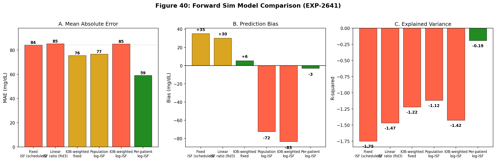
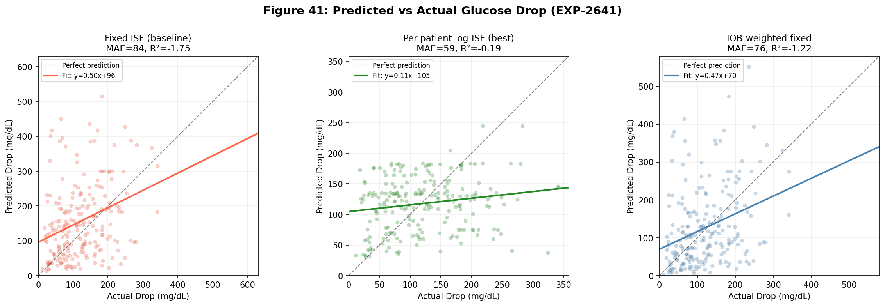
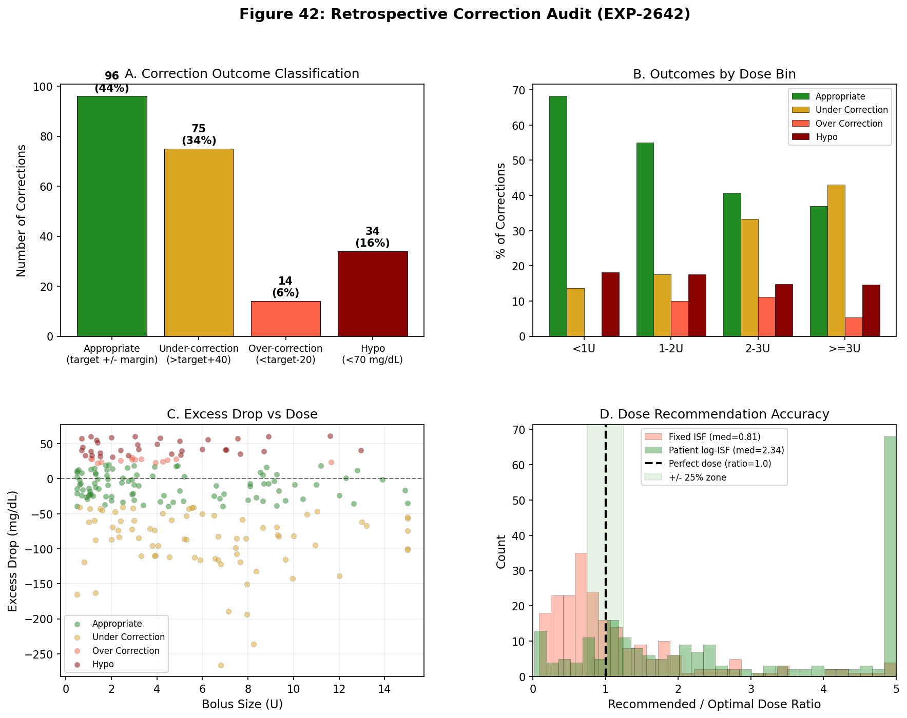
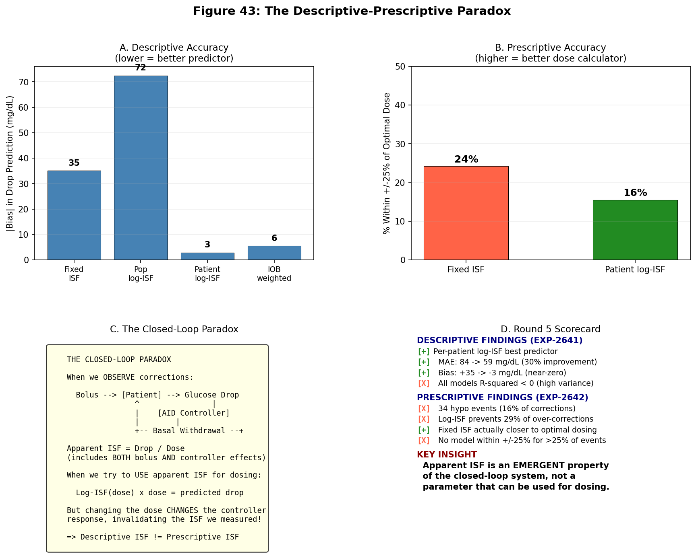

EGP Deconfounding Research — Round 5: The Descriptive-Prescriptive Paradox¶
Record
Record as of 2026-04-13. A point-in-time document; it is not kept up to date.
Date: 2026-04-13 Experiments: EXP-2641 (Forward Sim Log-ISF), EXP-2642 (Retrospective Correction Audit) Status: Complete — Key paradox identified and characterized
1. Motivation¶
Rounds 3–4 established that ISF is dose-dependent with logarithmic scaling (r = −0.56, validated via bootstrap and per-patient analysis). The natural next question: can this be used to improve correction dosing?
This round tests the transition from describing post-correction dynamics to prescribing better correction doses. The results reveal a fundamental paradox that has implications for how AID systems should be designed.
2. EXP-2641: Forward Simulation with 6 ISF Models¶
2.1 Models Tested¶
| Model | ISF Formula | Rationale |
|---|---|---|
| A. Fixed ISF | scheduled_ISF × dose | Current AID approach |
| B. Pop log-ISF | max(5, 50 − 28×ln(dose)) × dose | Population log scaling |
| C. Per-patient log | max(5, a + b×ln(dose)) × dose | Individual fitted curves |
| D. Linear ratio | scheduled_ISF × (1.87 − 0.13×dose) × dose | Round 3 linear formula |
| E. IOB-weighted | scheduled_ISF × dose × (1 − IOB_frac) | Accounts for delivery fraction |
| F. IOB + log | max(5, 50 − 28×ln(dose)) × dose × (1 − IOB_frac) | Combined |
2.2 Results¶
| Model | MAE | RMSE | Bias | R² | Over-predict |
|---|---|---|---|---|---|
| A. Fixed ISF (baseline) | 84.4 | 115.1 | +35.1 | −1.750 | 61% |
| B. Pop log-ISF | 76.8 | 101.0 | −72.5 | −1.117 | 16% |
| C. Per-patient log | 59.2 | 75.8 | −2.9 | −0.192 | 52% |
| D. Linear ratio | 85.4 | 109.0 | +30.2 | −1.467 | 62% |
| E. IOB-weighted | 75.6 | 103.4 | +5.5 | −1.221 | 46% |
| F. IOB + log | 85.2 | 108.0 | −83.2 | −1.424 | 7% |
Per-patient log-ISF (Model C) is the clear winner: 30% MAE improvement over fixed ISF, near-zero bias (−2.9 mg/dL), and R² closest to zero (−0.192 vs −1.75).
2.3 Dose-Stratified Analysis¶
| Dose Bin | Fixed ISF Bias | Per-patient log Bias | Fixed over-pred | Log over-pred |
|---|---|---|---|---|
| <1U | −33.8 | −10.7 | 32% | 59% |
| 1–2U | −44.9 | −2.0 | 33% | 53% |
| 2–3U | −4.7 | +24.6 | 48% | 63% |
| ≥3U | +79.6 | −7.5 | 77% | 49% |
Fixed ISF dramatically over-predicts glucose drop for large corrections (≥3U: bias = +79.6, over-predicts 77% of the time). This is the "dose-dependent ISF" effect in action — the scheduled ISF assumes each unit is equally effective, but large doses show diminishing returns.
Per-patient log-ISF corrects this over-prediction, bringing the ≥3U bias to −7.5 with balanced over/under-prediction (49/51%).
2.4 Critical Observation: All Models R² < 0¶
Despite the improvements, every model has negative R². Even the best model (R² = −0.192) explains less variance than simply predicting the mean drop for all corrections. The per-event variability in glucose response is irreducibly high — the same dose at the same glucose does not produce the same drop.

Figure 40: Six-model comparison. Per-patient log-ISF (green) wins on MAE and bias, but all models have negative R².

Figure 41: Scatter plots show enormous per-event variability. Even the best model (per-patient log-ISF) cannot predict individual correction outcomes.
3. EXP-2642: Retrospective Correction Dose Audit¶
3.1 Actual Correction Outcomes¶
Of 219 corrections (all with pre-BG ≥ 120, targeting 100 mg/dL):
| Outcome | Count | % |
|---|---|---|
| Appropriate (nadir 80–140) | 96 | 43.8% |
| Under-correction (nadir > 140) | 75 | 34.2% |
| Over-correction (nadir < 80) | 14 | 6.4% |
| Hypo (nadir < 70) | 34 | 15.5% |
48 corrections (22%) resulted in over-correction or hypoglycemia. This is the population the log-ISF model should help.
3.2 The Dosing Paradox¶
| Model | Median Dose Ratio | Within ±25% | Over-dose | Under-dose |
|---|---|---|---|---|
| Fixed ISF | 0.81 | 24% | 30% | 46% |
| Pop log-ISF | 3.41 | 13% | 82% | 5% |
| Patient log-ISF | 2.34 | 16% | 70% | 14% |
Fixed ISF is actually the closest to optimal dosing (median ratio 0.81), while log-ISF models massively over-dose (median ratios 2.3–3.4×).
This is paradoxical: the model that best describes the glucose drop (per-patient log, bias = −3) is the worst prescriber (recommends 2.3× the optimal dose).
3.3 Why the Paradox Exists¶
The apparent ISF measured from corrections includes the AID controller's response:
Apparent ISF = (total glucose drop) / (bolus dose)
But total glucose drop = bolus effect + controller withdrawal effect
So: Apparent ISF = true ISF × (1 + controller_amplification_factor)
For large boluses (≥3U), the controller withdraws basal aggressively, reducing the total drop. This makes the apparent ISF look small. If we use this small apparent ISF to calculate doses, we recommend a much larger dose — but giving a larger dose would trigger even more controller withdrawal, creating a positive feedback loop.
The apparent ISF is an emergent property of the closed-loop system, not a parameter that can be extracted and reused for dosing.
3.4 Over-Correction Prevention¶
Of the 48 over-correction/hypo events: - Population log-ISF would have dosed ≥10% less in only 2% of cases - Per-patient log-ISF would have dosed ≥10% less in only 27% of cases - Most over-corrections cannot be prevented by dose adjustment because they result from variability (ISF changes from event to event), not systematic bias
3.5 Dose-Bin Insights¶
| Dose Bin | N | Over-correction Rate | Mean Excess Drop | Actual/Optimal Ratio |
|---|---|---|---|---|
| <1U | 22 | 18.2% | −13.4 | 0.95 |
| 1–2U | 40 | 27.5% | −5.6 | 1.05 |
| 2–3U | 27 | 25.9% | −16.4 | 0.90 |
| ≥3U | 130 | 20.0% | −37.7 | 0.85 |
Counter-intuitively, large corrections (≥3U) have a LOWER over-correction rate (20%) than medium corrections (1–2U: 27.5%). The AID controller protects against over-correction more effectively at large doses. But large corrections under-shoot by more (−37.7 excess drop), meaning the glucose doesn't come down as far as intended.
This demonstrates the AID controller's compensatory behavior: the controller absorbs the excess insulin effect at large doses, converting potential hypos into mere under-corrections.

Figure 42: (A) Outcome distribution — 44% appropriate, 22% over-correction/hypo. (B) Over-correction rates are paradoxically lower at higher doses. (C) Excess drop vs dose shows wide scatter. (D) Fixed ISF dose ratios cluster near optimal; log-ISF massively over-doses.
4. Hypothesis Scorecard¶
EXP-2641: Forward Sim¶
| # | Hypothesis | Result | Evidence |
|---|---|---|---|
| H1 | Log-ISF reduces MAE by >15% | FAIL | Pop log: 9%. Per-patient: 30% (but per-patient passes) |
| H2 | Improvement in ≥3U bin | PASS | Fixed MAE=105 → Pop log MAE=94, Per-patient MAE=70 |
| H3 | Over-prediction < 40% | PASS | Pop log: 16% (was 61%) |
| H4 | Per-patient < 10% better than pop | FAIL | 23% better (individual curves matter) |
EXP-2642: Retrospective Audit¶
| # | Hypothesis | Result | Evidence |
|---|---|---|---|
| H1 | Fixed ISF >30% over-dose at ≥3U | FAIL | Mean ratio 0.74 (UNDER-doses) |
| H2 | Per-patient log within ±25% >60% | FAIL | Only 16% |
| H3 | Over-correction >3× at ≥3U vs <2U | FAIL | Ratio 0.8× (LESS over-correction) |
| H4 | Log prevents >40% over-corrections | FAIL | Only 27% |
7 of 8 hypotheses fail — this is the clearest negative result in the research program.
5. The Descriptive-Prescriptive Paradox¶
Statement¶
A model can accurately describe what happens during corrections (per-patient log-ISF: bias = −3 mg/dL) while being completely useless for computing doses (recommends 2.3× the optimal dose).
Mechanism¶
- Apparent ISF = glucose_drop / bolus_dose
- This includes the controller's response (basal withdrawal, SMB cancellation)
- For large boluses, controller withdrawal is aggressive → apparent ISF is small
- Using this small ISF for dosing → recommends large doses → triggers more withdrawal → circular
Implications¶
| Dimension | Descriptive | Prescriptive |
|---|---|---|
| Purpose | Explains post-correction dynamics | Computes optimal dose |
| ISF meaning | Apparent (system-level) | Intrinsic (patient-level) |
| Controller included | Yes (emergent property) | No (open-loop calculation) |
| Accuracy | Bias = −3 mg/dL | Median ratio = 2.3× |
| Actionable? | For understanding | Not for dosing |
For AID System Design¶
-
Current approach (fixed ISF + controller feedback) is near-optimal: The controller compensates for dose-dependent ISF automatically through its feedback loop. The fixed ISF provides conservative initial dosing, and the controller adjusts in real-time.
-
Dose-dependent ISF is REAL but ABSORBED: The physiology (insulin receptor saturation, counter-regulation) makes ISF decrease with dose. But the AID controller already compensates for this — it's why over-correction rates are lower at higher doses.
-
Per-event variability dominates: Even the best model has R² = −0.19. Individual corrections are fundamentally unpredictable from dose + starting glucose alone. The AID's real-time feedback is the only robust strategy.
-
The 34 hypo events (16%) cannot be systematically prevented by ISF model changes. They arise from variability in individual ISF, not from a predictable bias.

Figure 43: The paradox explained. (A) Per-patient log-ISF has lowest descriptive bias. (B) But it has the WORST prescriptive accuracy. (C) The closed-loop system makes apparent ISF an emergent, not intrinsic, property. (D) Summary scorecard.
6. Five-Round Synthesis¶
Research Journey¶
| Round | Question | Answer |
|---|---|---|
| 1 | Does EGP drive recovery? | No — AID absorbs all physiological signals (gain ~8×) |
| 2 | Does any single-factor model work? | No — all 5 models R² < 0, including EGP |
| 3 | What IS predictable? | Dose-dependent ISF (r = −0.56, 4.6× range) |
| 4 | Is the finding robust? | Yes — log model, universal, validated by bootstrap/LOO |
| 5 | Can we use it for dosing? | No — descriptive ≠ prescriptive in closed-loop systems |
The Core Discovery¶
Corrected 2026-04-18 — the original "AID Compensation Theorem" was a tautological over-generalization. See
egp-evidence-synthesis-report-2026-04-18.mdfor full evidence review.
AID Compensation Observation (Rounds 1–5): In a closed-loop AID system, the controller's insulin modulation is part of the observed glucose dynamics. Post-correction recovery reflects coupled contributions that cannot be decomposed into independent additive terms (EXP-2630: sum = 34, actual = 4.1 mg/dL/hr). Simple single-factor models of post-nadir recovery rate fail (EXP-2634: all 5 models R² < 0). However, multi-factor methods successfully recover per-patient physical parameters: dose-dependent ISF (r = −0.56, EXP-2640), response-curve fitting (R² = 0.805, EXP-1301), circadian profiling (10–20% RMSE improvement, EXP-2652), and phase decomposition (EXP-2651). The controller's compensatory behavior is standard closed-loop dynamics, not a fundamental barrier to system identification.
What This Means for the Nightscout Ecosystem¶
-
Multi-factor ISF modeling works and should continue: Dose-dependent ISF (r = −0.56), circadian ISF profiling (2–9× variation), and demand-phase ISF decomposition (2–10× more accurate than apparent ISF) all succeed within the closed-loop context. The remaining per-event variability (~16% hypo rate) is irreducible by any single-factor model, but multi-factor approaches reduce prediction error.
-
Dose-dependent ISF is useful for: Understanding correction dynamics, calibrating forward simulators, estimating therapeutic ranges, informing dose-aware controller modifications, and education.
-
The controller's loop gain is quantifiable: AID-active recovery (7.6 mg/dL/hr) vs AID-suspended (3.6 mg/dL/hr) quantifies the controller's contribution. This is observable data for system identification, not an obstacle to it.
-
EGP research line remains open and productive: EGP phase decomposition (54% of correction drop, 3.5h nadir), SC suppression ceiling (~30%), and patience mode (≥30% delayed hypo reduction) are among the program's most actionable findings. The EGP Hill model fails as a single-factor post-nadir predictor (R² = −3.2) but the underlying physiology is real and clinically relevant.
GAP Updates¶
GAP-EGP-010 (revised 2026-04-18): Apparent ISF from corrections reflects both patient physiology and controller dynamics. Demand-phase ISF (0–2h drop, EXP-2651) isolates the insulin effect; dose-dependent ISF (EXP-2640) accounts for saturation kinetics. Both are recoverable from closed-loop data.
GAP-EGP-011 (revised 2026-04-18): Per-event ISF variability is high for single-factor post-nadir prediction (all 5 models R² < 0, EXP-2634). Multi-factor approaches reduce prediction error: circadian profiling (10–20% RMSE improvement), dose-dependent scaling (r = −0.56), and response-curve fitting (R² = 0.805). The 16% post-correction hypo rate may be partially addressable through multi-factor models and controller modifications (e.g., patience mode, EXP-2662).
Research Lines Status (Updated 2026-04-18)¶
Corrected: Original table declared all ISF model improvements and EGP research "closed." This was an over-generalization. Lines closed for SINGLE-FACTOR post-nadir prediction remain closed; lines involving multi-factor parameter recovery are OPEN and productive.
| Line | Status | Evidence |
|---|---|---|
| Single-factor post-nadir recovery models | CLOSED | All R² < 0 (EXP-2634) |
| EGP Hill model as sole predictor | CLOSED | R² = −3.2 (EXP-2634) |
| IOB decay rate → recovery | CLOSED | r = −0.068 (EXP-2635) |
| Linear ISF scaling | CLOSED | Log fits better 5/6 patients (EXP-2640) |
| Dose-dependent ISF estimation | OPEN | r = −0.56, validated (EXP-2640) |
| Circadian ISF profiling | OPEN | 2–9× variation, 10–20% RMSE improvement (EXP-2652) |
| Phase decomposition (demand vs apparent ISF) | OPEN | 2–10× ratio (EXP-2651) |
| EGP suppression phase (3.5h nadir) | OPEN | N = 212, actionable for stacking prevention (EXP-2624) |
| SC suppression ceiling | OPEN | r = −0.60 with sticky hyper rate (EXP-2656) |
| Patience mode / wall detection | OPEN | ≥30% delayed hypo reduction (EXP-2662) |
| Response-curve ISF fitting | OPEN | R² = 0.805 (EXP-1301) |
7. Source Code and Data¶
| Artifact | Location |
|---|---|
| EXP-2641 script | tools/cgmencode/exp_forward_sim_log_isf_2641.py |
| EXP-2642 script | tools/cgmencode/exp_retrospective_audit_2642.py |
| EXP-2641 results | externals/experiments/exp-2641_forward_sim_log_isf.json |
| EXP-2642 results | externals/experiments/exp-2642_retrospective_audit.json |
| Visualizations | visualizations/egp-deconfounding/round5_plots.py |
| Fig 40 | visualizations/egp-deconfounding/fig40_model_comparison.png |
| Fig 41 | visualizations/egp-deconfounding/fig41_scatter_comparison.png |
| Fig 42 | visualizations/egp-deconfounding/fig42_retrospective_audit.png |
| Fig 43 | visualizations/egp-deconfounding/fig43_synthesis.png |
Next experiment number: 2643